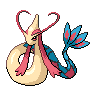

Milotic appears on 130 of 1729 Pokémon Champions VGC tournament teams in the backtwo archive (8% usage, Reg M-A and Reg M-B). The most common item is Leftovers (76% of Milotic sets) and the most common ability is Competitive. Its most frequent teammate is Sneasler (41% of its teams).
Open Milotic in the full app →| Team | Player | Event | Result | Reg | Date |
|---|---|---|---|---|---|
| nm_k_'s PJCS 2026 Top 4 Team (Seniors) | nm_k_ | PJCS 2026 | Top 4 (Seniors) | M-A | 7 Jun 2026 |
| Ruuto's PJCS 2026 Top 64 Team | Ruuto | PJCS 2026 | Top 64 | M-A | 6 Jun 2026 |
| pikaso's PJCS 2026 Team | pikaso | PJCS 2026 | — | M-A | 6 Jun 2026 |
| Boyt's Turin SPE 2026 Top 32 Team | Jamie Boyt | Turin SPE 2026 | 27th | M-A | 8 Jun 2026 |
| jung_cid's Korea PTC 2026 Top 32 Team | jung_cid | Korea PTC 2026 | 30th | M-A | 26 May 2026 |
| LenVGC's Charizard-X Floette Team | Alex Soto | - | — | M-A | 27 May 2026 |
| Kaizen's Charizard-X Floette Team | Andrew Yap | - | — | M-A | 27 May 2026 |
| yura's Ranked Season M-1 7th Place Team | yura | Ranked Season M-1 | 7th | M-A | 13 May 2026 |
| punihina1334's Extreme Speed #4 Tour Top 8 Team | punihina1334 | Extreme Speed #4 Tour | Top 8 | M-A | 13 May 2026 |
| ponponta's PJCS Qualifiers 67th Place Team | Shota Hongu | PJCS Qualifiers | 67th | M-A | 8 Jun 2026 |
| acethnic's PJCS Qualifiers Team | Tomonori Aoi | PJCS Qualifiers | — | M-A | 10 May 2026 |
| pikaso's PJCS Qualifiers Team | pikaso | PJCS Qualifiers | — | M-A | 10 May 2026 |
Showing 12 of 130 teams. See all 130 in the full app →
Already running Milotic and want the rest of the six? The team finder takes the Pokémon you have and ranks every tournament team by how many of your picks it matches. Or run the numbers in the damage calculator — Champions-accurate, with Mega Evolution, Stat Points, weather, terrain and spread reduction.